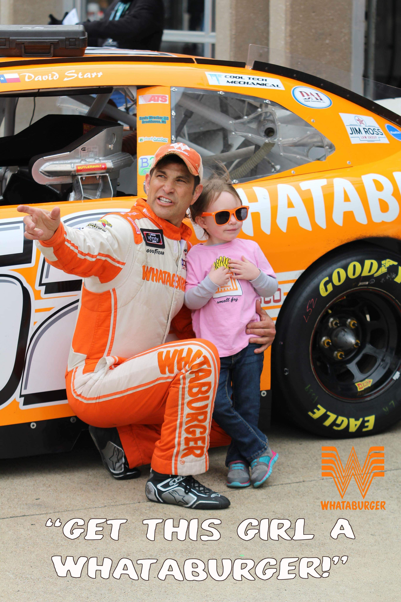
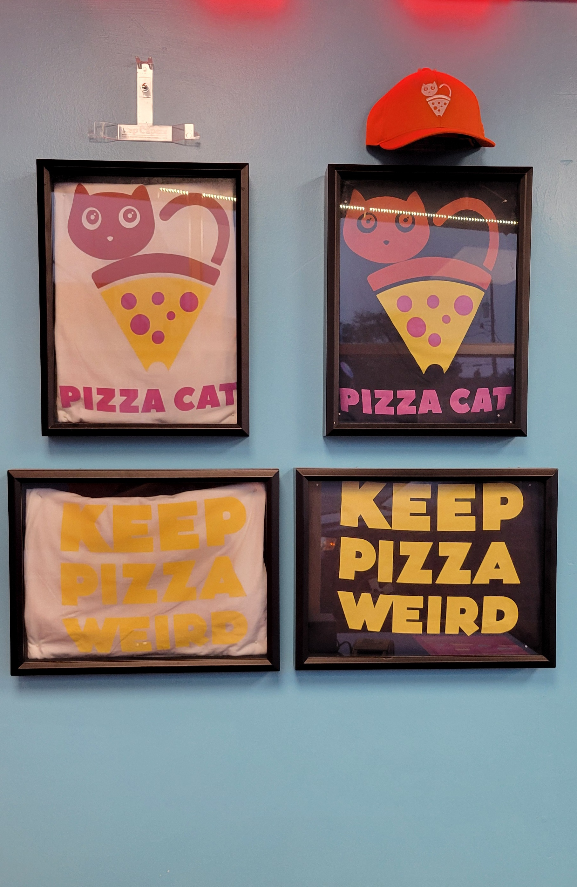
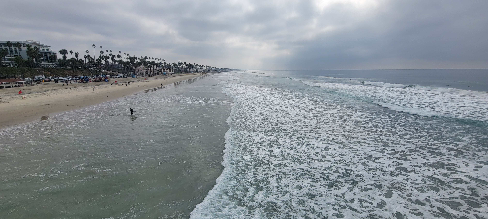
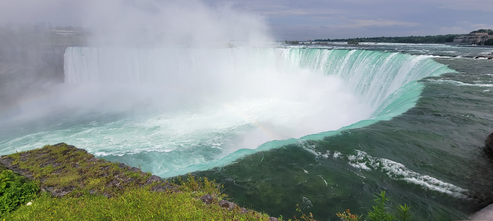
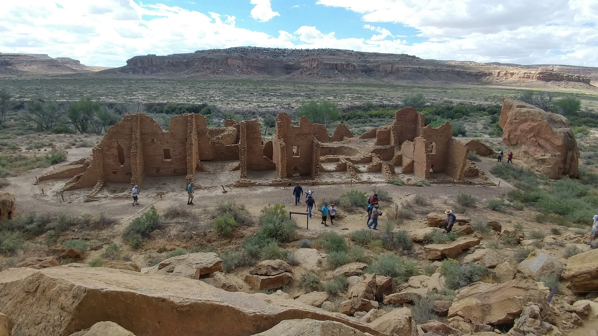
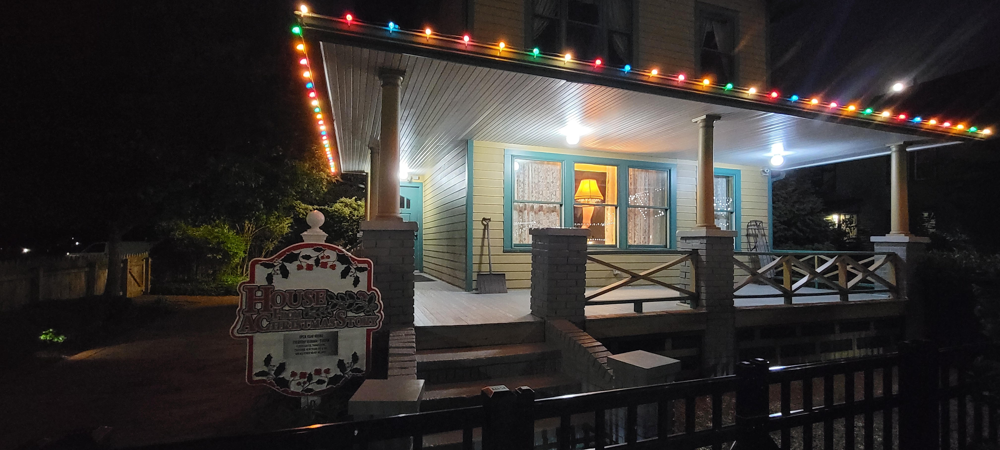
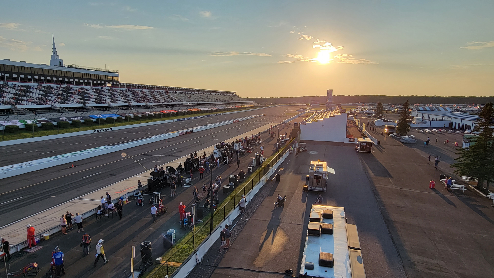
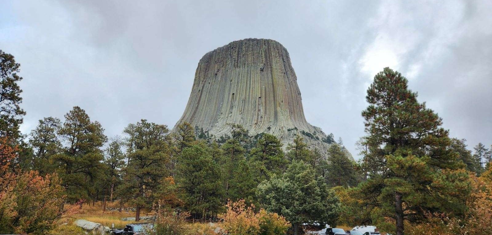
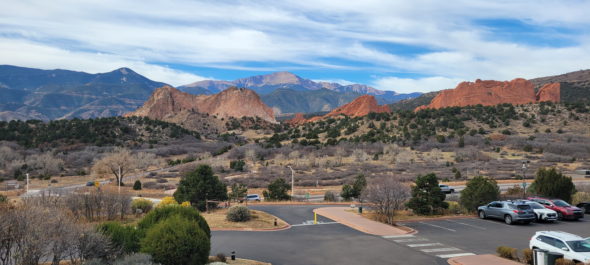

Greetings everyone! My name is Marcus Leno and I am a Native American from two tribes in New Mexico, the Pueblos of Acoma and Zia. I currently reside in the Pueblo of Acoma from a small village called McCartys. Both tribes speak Keresan, however I am not a fluent speaker or understand the language entirely. Most people are not aware, but there are 7 Keres speaking tribes in New Mexico all with slightly different dialects but can understand one another.
A few of my hobbies consist of gaming (FPS mostly), watching anime, golf, hunting, photography and traveling which the end goal is to travel the world. Most of my traveling has been because of volunteer photography work for my friends NASCAR website, The Racing Experts. I am still new to photography, but I do enjoy learning the in and outs of the camera striving for breathtaking shots. My biggest highlight of photography was meeting Michael Jordan during one of the race events in Atlanta, Georgia.
Along my travels, I came across many astonishing views that left me speechless. A few of my favorite places that I was able to see was Niagra Falls from the Canadian side, and the Pacific Ocean near Oceanside, California. During my travels, the two longest road trips I have taken was when I visited Niagra Falls where we started from Monroe, Michigan around Lake Erie and back and the second was from New Mexico to Tennessee. However, my ultimate dream is to visit either Japan or Switzerland, but I am always looking forward to more adventures during my lifetime.









